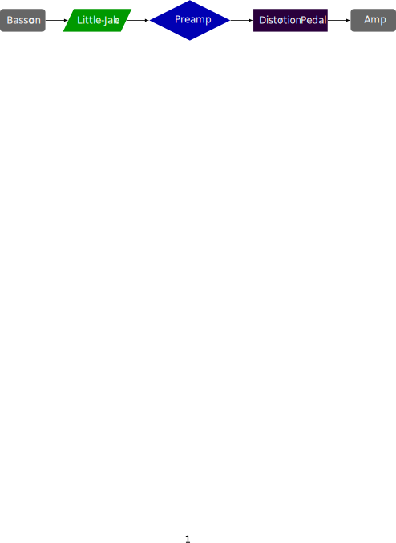

This piece was composed in 2004 in collaboration with Shelly Organ. The piece is published by Faber Music Ltd.
This piece requires feeding the bassoon signal through a distortion pedal, or an effects unit with distortion, and then into an amp. The performance notes say that in the past this was done by a microphone at the top of the bassoon. However it makes more sense now to use an electric bocal for this piece.
Two setups for this piece are shown below. One uses an electric bocal, and the other uses a microphone. An XLR to quarter inch cable will likely be necessary to plug in to the distortion pedal. A mixing board could also be used in between the microphone and the pedal. 
This piece is fairly difficult from a technical standpoint, requiring the use of multiphonics, advanced rhythms, timbral fingerings, flutter-tonguing, and extensive use of the upper register of the bassoon. The final note of the piece is high F. However, the piece is unaccompanied, so the performer has more freedom with tempo and the rhythms of the runs. From an electronics standpoint, the piece is fairly simple as the distortion pedal is active for the duration of the piece.
This piece is fairly aggressive with the distortion effects, multiphonics, and extensive chromatic harmonies. But it is written to emulate the sound of 1980s rock guitar, which it succeeds at fairly well. Audiences that would enjoy that style of guitar playing will probably also enjoy this piece.
©2024 by Benjamin Bradshaw
Logo ©2024 by Hannah Bradshaw